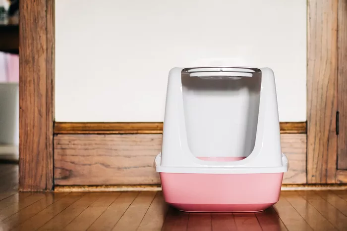
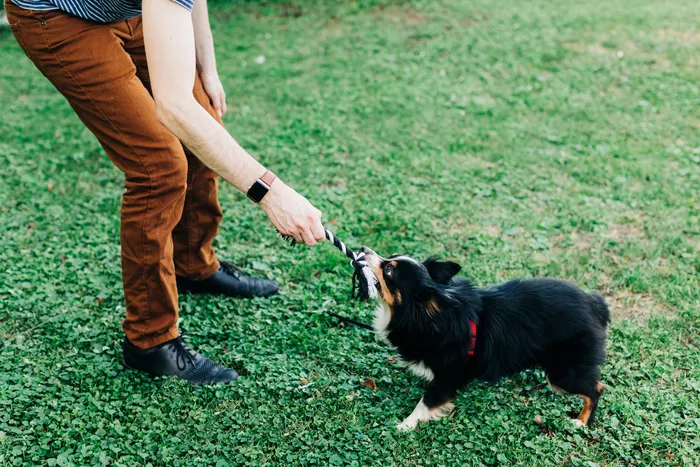
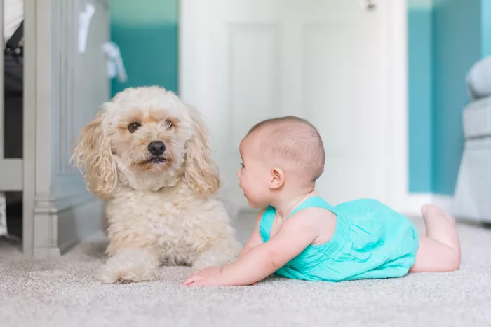
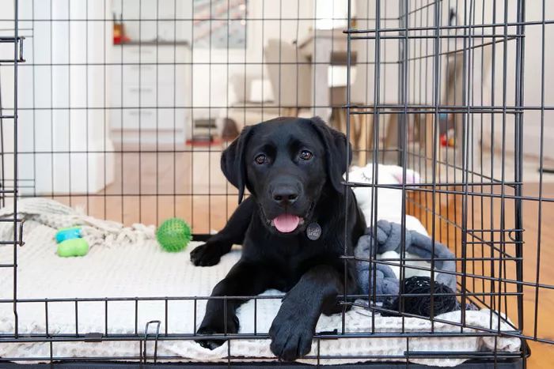

5 Reasons Dogs Are Better Than Cats
In many people's opinion, dogs are better than cats. Dogs are more trainable, use the bathroom outside, can protect you, and promote a more active lifestyle. Having a dog has many benefits that make it better than having a cat.
And it is possible to think one is better than the other but still love both. Let's explore some reasons why dogs may be better than cats. (Not to worry, cat lovers! There are also a lot of reasons why cats can be better than dogs.)
01
of 5
No Litter Boxes!

It's probably fair to say that even cat lovers don't love litter boxes. No matter how well you keep up with them, there always seems to be a lingering odor. Plus, litter often tracks all over the house. It's practically impossible to find a good place to put the litter box in a small house. Scooping the stuff is stinky and dusty.
Dogs don't need litter boxes. They can be house-trained and most can stick to a schedule. They can use the yard or do their business during walks around the neighborhood. You only have to pick up the poop, not the urine the way you have to do with litter boxes. And as for the poop, you can simply use poop bags on walks and a poop-scooper in the yard. Cleaning up poop may not be fun, but many think it's the lesser of two necessary evils.
Best of all, the poop and pee happen outdoors, not inside your home!
02
of 5
Dogs Just Wanna Have Fun

There's only so much play you can do with your cat. Many cats love to play with string toys and they'll bat their little cat ball toys around, but it's almost like they're humoring you. They can play on their own, not just with people.
Dogs absolutely love to play, and it's often interactive play that they want, especially with you. You can play fetch with a ball or a disc. You can enjoy an exciting game of tug-of-war. You can play chase in the yard. If your dog gets along well with other dogs, you can even set up a doggie "playdate" with another pup. Just make sure both dogs are healthy and will get along.
03
of 5
Dogs Adapt Better to Change

Cats are usually sensitive to their environments and dislike change. Many dogs tend to accept change more easily, especially when their owners act like it's no big deal. Of course, there are plenty of anxious and fearful dogs out there, but as a species, they're often calmer in the face of significant alterations to their lifestyles.
When it comes to introducing new people, pets, or items to your home or moving to a new house, cats generally need more time to adapt. They don't automatically trust that all is well. They want proof first. Most dogs take their cues from their owners. If you're cool and calm when that new baby comes in your door, chances are that your dog will be, too. Of course, some might not be quite as accepting of strangers.
04
of 5
More Control Means Less Destruction

Try to control a cat and you might hear the tiny sound of kitty laughter. Most cats will go where they want to go, jump where they want to jump, scratch where they want to scratch, and mark whatever they think needs marking. Then there are those hairballs, which are most easily found when you're barefoot in the middle of the night.
Yes, dogs can cause a whole lot of destruction, but you can usually crate train a dog and keep him and your home safe and secure while you're away. Most crate-trained dogs consider their crates to be their own special places. Try putting a cat in a crate or behind a closed door and you'll have one unhappy kitty
Corrective training and a stern voice can have a lot of power over a dog. Try this with the average cat and you'll be lucky if he glances in your direction while continuing to do whatever he was doing.
05
of 5
Training Dogs is Easier

Okay, cats can technically be trained, but even cat lovers admit that it's not usually as easy as training a dog. Even food-motivated cats will soon tire of training sessions and walk away. Or, they'll just smack the food out of your hand and eat it anyway. In general, cats train us humans better than we could ever train them.
On the other hand, most dogs actually enjoy training. It seems to give them a sense of purpose. It's a job, and most dogs love to work. Plus, many dogs are highly motivated by food and attention. They'll gladly sit, stay, shake, lie down, and roll over in exchange for a delicious reward.
Dogs seem to display a sense of pride when they've done a good job. In fact, dogs sometimes misbehave when they're bored. They need more exercise and mental stimulation. Training helps provide the latter.